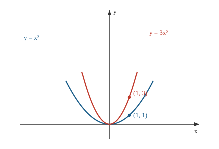
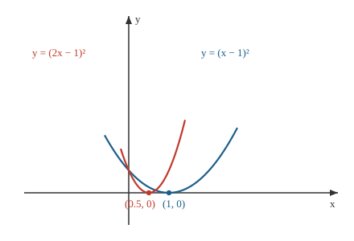

<script>if(location.hostname.endsWith('onrender.com'))location.replace('https://math-sandbox.github.io'+location.pathname+location.search+location.hash)</script>
<section class="theory" data-section="P1-2.7">
<h2>2.7 Stretches</h2>
<p class="src">Based on Cambridge International AS &amp; A Level Mathematics: Pure Mathematics 1 Coursebook (Sue Pemberton), Chapter 2, printed pp.57–59 (stretches parallel to the axes, Key point style, Exercise 2G). Printed pages were read from P1.pdf (printed 57–59 = PDF 69–71). Own wording and new numbers. Teaching stops before 2.8 Combined transformations, which continues on printed p.59.</p>
<p class="key-words"><strong>Key words:</strong> <em>stretch</em></p>
<p>A <strong>stretch</strong> of a graph enlarges or reduces all distances from an invariant axis by a constant scale factor. The graph of \(y=af(x)\) is a stretch of \(y=f(x)\) by scale factor \(a\) parallel to the \(y\)-axis (the \(x\)-axis is invariant). The \(y\)-coordinate of each point is multiplied by \(a\), and the \(x\)-coordinate is unchanged.</p>
<figure>

<figcaption>The graph of \(y=3x^2\) is a stretch of \(y=x^2\) by scale factor 3 parallel to the \(y\)-axis. The point \((1, 1)\) is mapped to \((1, 3)\).</figcaption>
</figure>
<p>The graph of \(y=f(ax)\) is a stretch of \(y=f(x)\) by scale factor \(1/a\) parallel to the \(x\)-axis (the \(y\)-axis is invariant). It is obtained by replacing every \(x\) in the formula by \(ax\). Distances from the \(y\)-axis are divided by \(a\).</p>
<figure>

<figcaption>The graph of \(y=(2x-1)^2=f(2x)\) is a stretch of \(y=(x-1)^2\) by scale factor \(1/2\) parallel to the \(x\)-axis. The turning point \((1, 0)\) is mapped to \((0.5, 0)\).</figcaption>
</figure>
<div class="worked-example">
<h4>Worked example 1</h4>
<p class="src">Book: Worked example style, printed pp.57–58, tracking a point under a stretch. New numbers.</p>
<p>The point \((2, 4)\) lies on the graph of \(y=f(x)\). Find the image of this point on the graph of \(y=3f(x)\).</p>
<ol class="steps">
<li>A stretch of scale factor 3 parallel to the \(y\)-axis multiplies the \(y\)-coordinate by 3, so the image is \((2, 12)\). <span class="mark">A1</span></li>
</ol>
<p class="final"><strong>Answer:</strong> \((2, 12)\)</p>
</div>
<div class="worked-example">
<h4>Worked example 2</h4>
<p class="src">Book: writing an equation after an \(x\)-stretch, printed p.58. New numbers.</p>
<p>The graph of \(y=x^2+2x-5\) is stretched by scale factor \(1/2\) parallel to the \(x\)-axis. Find the equation of the resulting graph.</p>
<ol class="steps">
<li>Replace every \(x\) by \(2x\): \(y=(2x)^2+2(2x)-5=4x^2+4x-5\). <span class="mark">A1</span></li>
</ol>
<p class="final"><strong>Answer:</strong> \(y=4x^2+4x-5\)</p>
</div>
<h3>Common mistakes</h3>
<ul>
<li>Confusing the scale factor for \(y=f(ax)\): this is a stretch of factor \(1/a\), not \(a\), parallel to the \(x\)-axis.</li>
<li>Applying an \(x\)-stretch to the \(y\)-coordinates, or a \(y\)-stretch to the \(x\)-coordinates.</li>
<li>Replacing \(x\) by \(x/2\) when a stretch of factor \(1/2\) parallel to the \(x\)-axis is required (the correct replacement is \(x\) by \(2x\)).</li>
</ul>
<h3>Quick checks</h3>
<div class="quick-check" data-q="QC1">
<h4>Quick check 1</h4>
<p>The point \((2, 4)\) lies on the graph of \(y=f(x)\). What is the \(y\)-coordinate of the image of this point on the graph of \(y=3f(x)\)?</p>
<details><summary>Worked solution</summary>
<ol class="steps">
<li>A stretch of scale factor 3 parallel to the \(y\)-axis multiplies the \(y\)-coordinate by 3, so the image has \(y\)-coordinate \(3\times 4=12\). <span class="mark">A1</span></li>
</ol>
<p class="final"><strong>Answer:</strong> \(12\)</p>
</details>
</div><div class="quick-check" data-q="QC2">
<h4>Quick check 2</h4>
<p>The point \((4, 5)\) lies on the graph of \(y=f(x)\). The same \(y\)-value occurs on the graph of \(y=f(2x)\) at \((c, 5)\). What is the value of \(c\)?</p>
<details><summary>Worked solution</summary>
<ol class="steps">
<li>The graph of \(y=f(2x)\) is a stretch of scale factor \(1/2\) parallel to the \(x\)-axis, so the new \(x\)-coordinate is \(4/2=2\). <span class="mark">A1</span></li>
</ol>
<p class="final"><strong>Answer:</strong> \(2\)</p>
</details>
</div><div class="quick-check" data-q="QC3">
<h4>Quick check 3</h4>
<p>A point on the graph of \(y=f(x)\) has \(y\)-coordinate 5. After a stretch of scale factor 3 parallel to the \(y\)-axis, what is the new \(y\)-coordinate of this point?</p>
<details><summary>Worked solution</summary>
<ol class="steps">
<li>The new \(y\)-coordinate is \(5\times 3=15\). <span class="mark">A1</span></li>
</ol>
<p class="final"><strong>Answer:</strong> \(15\)</p>
</details>
</div>
</section>
